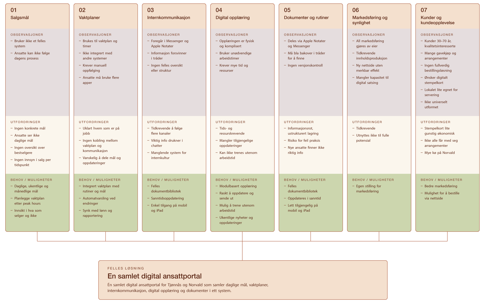

Prosess & ekstramateriale
Underlagsdokumenter, rapport, designmanual og affinity map fra prosjektet.
Intervjuguide
Intervjuguiden ble brukt i det kvalitative intervjuet med daglig leder. Spørsmålene ble utformet for å avdekke reelle smertepunkter i driften — ikke bekrefte antagelser.
Last ned intervjuguideRapport
Prosjektrapporten dokumenterer hele prosessen fra brukerinnsikt og intervju til designvalg og prototype — inkludert affinity map, personas og WCAG-vurderinger.
Last ned rapportAffinity map
Funn fra intervjuet ble gruppert i 6 temaer gjennom affinity mapping. Kartet avdekket at vaktplan og kommunikasjon var de to hyppigst nevnte problemene — og styrte prioriteringene i løsningsdesignet.
Etter intervjuet med Mari-Mette satt vi igjen med mye spredt informasjon som måtte struktureres før videre arbeid. Vi gjennomførte affinity-mapping i Figma og samlet funnene i syv temaer: salgsmål, vaktplaner, internkommunikasjon, digital opplæring, dokumenter og rutiner, markedsføring og synlighet, og kunder og kundeopplevelse.
Innenfor hvert tema delte vi funnene inn i observasjoner, utfordringer og behov/muligheter. Dette gjorde det lettere å koble designvalg til konkrete funn fra intervjuet.
Kartleggingen viste at flere utfordringer hadde samme årsak: informasjon og verktøy var spredt på fem ulike plattformer. Derfor fikk vi tidlig en tydelig retning mot en samlet ansattportal.
Videre valgte vi å fokusere på vaktplan, kommunikasjon, opplæring og dokumenthåndtering, fordi disse områdene påvirket de ansattes hverdag mest direkte. Markedsføring og kundeopplevelse ble beholdt som kontekst, men ikke prioritert i selve løsningen.

Designmanual
Manualen definerer den visuelle profilen for portalen: farger, typografi, komponenter og bruksmønstre.
Last ned designmanualNettside generert med Claude Design
Et eksperiment utenfor oppgavens rammer: 17. april brukte jeg Figma-filen fra prosjektet som kilde og testet Claude Design — lansert samme dag. Jeg definerte layout, retning og struktur gjennom noen runder med prompting og redigering. Designet, kildemateriellet og redaksjonell kontroll er mitt; AI-en var verktøyet.
Åpne nettsiden →